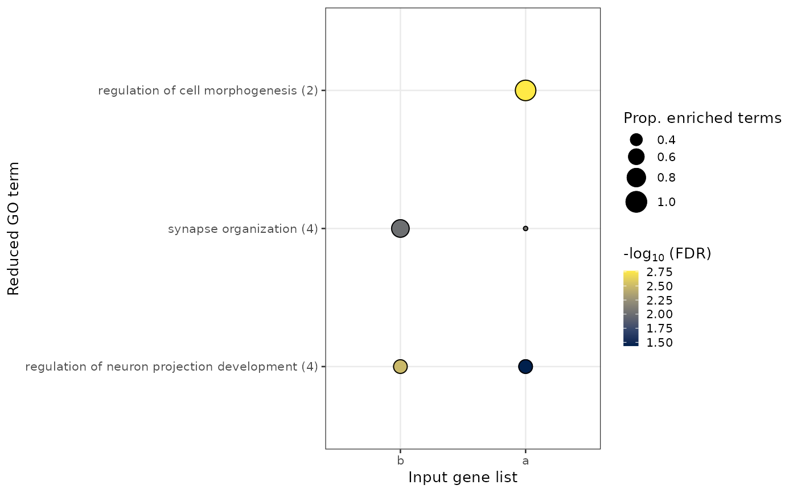

go_plot plots GO terms that have been reduced using go_reduce.
go_plot(
reduced_pathway_df,
col_gene_list = "gene_list",
col_fdr = "fdr",
fct_gene_list = NULL
)
Arguments
| reduced_pathway_df |
the tibble derived from
go_reduce. |
| col_gene_list |
a character() vector, with the name of column
containing the name(s) of the inputted gene list(s). Defaults to
"gene_list". |
| col_fdr |
a character() vector, with the name of column containing
enrichment p-values/fdr-values. Defaults to "fdr". |
| fct_gene_list |
a character() vector, with the order in which input
gene lists should be factored. Defaults to NULL. |
Value
ggplot displaying the pathway enrichments using reduced perent
terms.
x-axis displays the inputted gene list(s).
y-axis displays the reduced parent term, with the number of associated
child GO terms in brackets. Parent terms are ordered first by the factoring
of the input gene list (as provided in the argument, fct_gene_list) and
then by the number of associated child terms.
size of the dot indicates the proportion of child terms associated
with an inpute gene list that are annotated to the parent term.
fill of dot indicates the minimum FDR
assigned to a child term that is associated with the parent term (within an
input gene list).
See also
Examples
#>
#> ── Column specification ────────────────────────────────────────────────────────
#> cols(
#> go_type = col_character(),
#> go_id = col_character(),
#> go_term = col_character()
#> )
#>
#> Loading required package: org.Hs.eg.db
#> Loading required package: AnnotationDbi
#> Loading required package: stats4
#> Loading required package: BiocGenerics
#> Loading required package: parallel
#>
#> Attaching package: ‘BiocGenerics’
#> The following objects are masked from ‘package:parallel’:
#>
#> clusterApply, clusterApplyLB, clusterCall, clusterEvalQ,
#> clusterExport, clusterMap, parApply, parCapply, parLapply,
#> parLapplyLB, parRapply, parSapply, parSapplyLB
#> The following objects are masked from ‘package:stats’:
#>
#> IQR, mad, sd, var, xtabs
#> The following objects are masked from ‘package:base’:
#>
#> anyDuplicated, append, as.data.frame, basename, cbind, colnames,
#> dirname, do.call, duplicated, eval, evalq, Filter, Find, get, grep,
#> grepl, intersect, is.unsorted, lapply, Map, mapply, match, mget,
#> order, paste, pmax, pmax.int, pmin, pmin.int, Position, rank,
#> rbind, Reduce, rownames, sapply, setdiff, sort, table, tapply,
#> union, unique, unsplit, which.max, which.min
#> Loading required package: Biobase
#> Welcome to Bioconductor
#>
#> Vignettes contain introductory material; view with
#> 'browseVignettes()'. To cite Bioconductor, see
#> 'citation("Biobase")', and for packages 'citation("pkgname")'.
#> Loading required package: IRanges
#> Loading required package: S4Vectors
#>
#> Attaching package: ‘S4Vectors’
#> The following object is masked from ‘package:base’:
#>
#> expand.grid
#>
#> preparing gene to GO mapping data...
#> No scores provided. Falling back to term's size
#> Joining, by = "parent_term"
